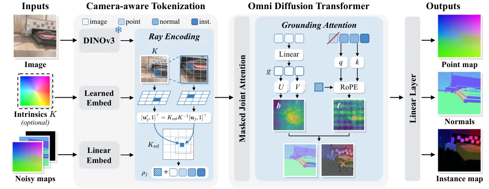
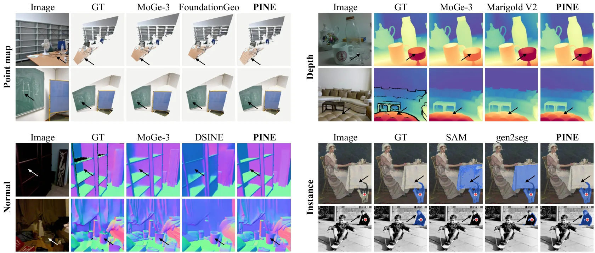
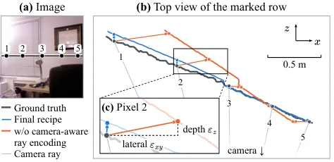
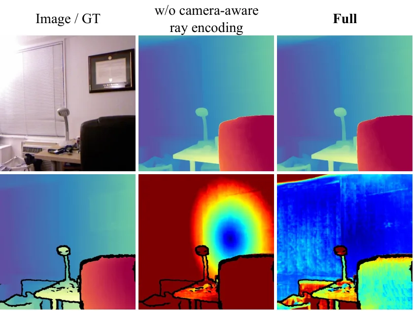
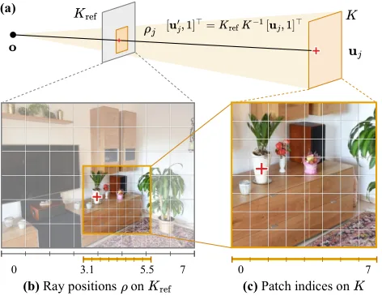
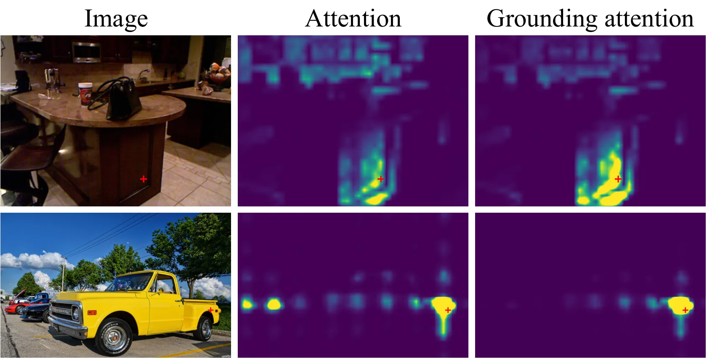

PINE：一次前向同时出点图、表面法向与实例图
PINE: Point, Instance and Normal Estimation in One-Step Diffusion Model
一句话：三张图不是三个任务，而是三条 token 流——用射线定位、用流掩码隔噪、用 DINO 亲和度分组，一次前向全部出。
Rel_p
avg rank
mIoU
speedup
作者、单位与技术谱系 · Research context
作者与单位
研究脉络
- PointDiT：Pixel-space Diffusion for Monocular Geometry Estimation方法基座关系：提供初始权重、像素空间扩散范式与点图/深度评测口径，PINE 在其上扩成三流并换掉位置编码。[PINE 原文 §4.1、Table 1 与 Table 5]
- MoGe：单目几何的仿射不变点图与焦距反解方法上游关系：提供「点图 + 由点图反解焦距」的评测与实现范式，PINE 的未知内参分支沿用其焦距恢复思路。[PINE 原文 §3.2、Table 1 与 Table 4]
- Marigold V2 与 gen2seg（损失与实例流范式）方法上游关系：法向损失沿用 Marigold V2 的余弦式目标，实例流沿用 gen2seg 的聚类损失与颜色置换不变设定。[PINE 原文 §3.4、Table 2 与 Table 3]
- DINOv3 与 DiT（表征与骨干）方法基座关系：DINOv3 提供冻结 patch 特征与亲和度来源，DiT 提供三流共享的去噪骨干。[PINE 原文 §3.1、§3.3 与 Table 6]
合作网络
- AIGeeksGroup 项目页与代码PINE 作者团队 → aigeeksgroup.github.io/PINE关系：官方项目页（团队归属）[PINE 摘要页项目链接]
- Melbourne × Southeast × Fudan × PKU × Hanyang 跨机构署名The University of Melbourne → Southeast University / Fudan University / Peking University / Hanyang University关系：共同署名（跨机构合作）[PINE 原文首页作者单位]
- PINE → PointDiT 权重PINE → PointDiT（Haofei Xu 等）关系：技术依赖（初始化权重与范式）[PINE 原文 §4.1 与 Table 5]
作者单位与角色（通讯、项目负责人）取自论文首页与脚注；谱系关系均来自正文显式引用与实验对照；未发现导师/师生关系的公开证据，故 network 只记录项目页、同单位署名与技术依赖。
方法本质拆解 · What actually changed
是不是微调？
是从 PointDiT 权重初始化的端到端训练，不是冻结推理：几何两流用流匹配、实例流用聚类损失联合优化，DINOv3 骨干全程冻结。训练 20 epoch、8 张 A100 约 20 小时（PINE-L），属于「小数据重训一个几何基础模型」而不是轻量适配。
有没有额外约束？
结构约束有三条：流掩码禁止实例流与几何流互相注意；grounding attention 只加在法向-法向与实例-实例对上；射线编码要求所有 token 的位置由同一参考相机定义。损失侧还有相对点误差（按到中心距离归一化）、MiDaS 式梯度损失、Marigold V2 法向损失与 gen2seg 实例损失，权重分别为 0.1、0.5、默认、0.02。
推理/后端到底做了什么？
推理是一次前向：图像 + 可选内参 → DINOv3 → 3L token → DiT（几何流 t=0、实例流 t=0 且 z=0）→ 三个线性头出点图、法向、实例图。没有多步采样、没有测试时优化、没有后处理分割；内参缺失时额外做一次最小二乘 + 一维搜索反解焦距。
方法本质是什么？
本质是把「一个像素对应一条射线」这件几何事实写进 transformer 的位置系统，再把「哪些 patch 属于同一表面/物体」这件语义事实写进注意力偏置。它改变的是多任务模型里「位置」与「分组」两个先验的注入方式，而不是网络容量，所以能在 13.9 万张图上同时拿到点图 SOTA 与接近 SAM 的大物体实例。
输入单图（可选内参），三条 token 流在同一个 DiT 里一次前向：射线定位、流掩码隔噪、DINO 亲和度分组，直接输出点图、法向与实例图。

结论与问题Conclusion & Motivation
核心结论
PINE 证明了「几何 + 语义」不必是两个模型：把点图、法向、实例图当成三条并行的 token 流，用一次 DiT 前向就能同时输出，而且点图精度不降反升。关键不在于多加一个解码头，而在于修掉 DiT 的三个隐含假设：实例图没有固定回归目标，就用确定性回归 + 聚类损失并把它与几何噪声隔离；点图的位置由相机射线而非像素决定，所以内参一旦给定就能真正改善几何（Rel_p 4.82→3.94）；法向与实例需要「哪些 patch 属于同一组」，就把 DINOv3 的亲和度写成注意力偏置。结果是 PINE-H 在无内参/有内参下点图 Rel_p 分别为 4.16/3.33，法向平均排名 1.8（MoGe-3 为 2.4），三图合计 137 ms。
动机与问题
当前一张图的完整解析要串一个几何模型（MoGe、DA3、UniDepth）和一个分割模型（SAM），延迟与显存相加，而且两者的图不在同一个相机下——法向估计器多数只吃图像，即使给了内参也不用。另一类通用模型（4M、Unified-IO、DICEPTION、OneDiffusion）把多任务塞进一个网络，但 DICEPTION 每张图跑一次前向、OneDiffusion 每张图要多次采样，成本并没有消失。真正的障碍是 DiT 为 RGB 设计：实例颜色可以任意置换、点图的深度要沿相机射线放置、法向与实例在表面/物体内是常数，这三点分别对应「目标」「位置」「分组」三个假设，不修就无法一步出三图。
方法Method
方法总览
输入图像（可选内参 K）先过冻结 DINOv3 得到 patch 特征，三条流各自把目标图嵌入 L 个 patch token 并与 DINO 特征拼接、投影，形成 3L 个 token 的序列，过若干 DiT 块（adaLN-Zero 按各自时间步条件化），再各用一层线性解码。几何两条流（点图、法向）用流匹配：训练时按 t_s 加噪、网络预测 clean map 再换算速度；推理时置 t_s=0、z=σε，一步出结果。实例流不采样：固定 z_i=0、t_i=0，直接从图像特征回归实例图，用聚类损失（gen2seg 式）监督。流掩码只允许几何两流互看、实例流只看自己；grounding attention 只在法向-法向与实例-实例对上加 DINO 亲和度偏置；相机射线编码替换 patch 索引进入正弦位置编码与 2D RoPE。
关键技术细节
射线定位的构造是：patch 中心 u_j 经 K_ref K^{-1} 投到参考相机像平面得到 u′_j，位置 ρ_j=u′_j/p−1/2；当 K=K_ref 时它退化为整数 patch 索引，所以这是「像素索引」的严格推广。由于 RoPE 使 q^T k 的位置项只依赖 ρ_l−ρ_j，注意力看到的是两条射线的夹角偏移而不是像素距离。内参缺失时用参考相机的视场角与图像中心当默认相机，并在每个流的时间步条件上加一个可学习 embedding 标记「内参缺失」，推理后由点图反解焦距：对固定 Δz，式 (7) 对 1/f、Δx、Δy 是线性的，最小二乘解，再对 Δz 做一维搜索。像素空间扩散（不用 VAE 隐空间）是为了避免解码器把深度边缘抹成飞点。grounding attention 的偏置 b_jl=(Ug_j)^T(Vg_l)，U、V 是每个头各自学习的低秩投影；点图流不加，因为「看起来像」的两面墙可能深度完全不同。

实验Experiments
实验设置
训练数据为 13.9 万张合成图 + 2.4 万张真实图，几何从 PointDiT 预训练权重初始化；B/L/H 三档分别配冻结的 DINOv3 ViT-B/16、ViT-L/16、ViT-H+/16，参考相机焦距 420 像素，20 epoch、AdamW、学习率 1e-5、batch 64（bf16），PINE-L 约 20 小时 / 8 张 A100。评测：点图与深度用 DIODE、KITTI、NYUv2、ETH3D、HAMMER、iBims-1、Booster 共 3,444 张，报 Rel 与 δ1；法向用 NYUv2、ScanNet、iBims-1、Sintel（DSINE 协议），报平均角误差与 11.25° 内比例；实例用 COCOexc（gen2seg 排除的 46 类）、DRAM、EgoHOS、iShape、PIDRay，每实例一个点提示、报 mIoU。对照包括 MoGe/MoGe-2/MoGe-3、UniDepthV2、DA3、FoundationGeo、Depth Pro、PointDiT、Marigold V2、DSINE、StableNormal、SAM、gen2seg。
实验数字与比较
点图：PINE-H 无内参 Rel_p 4.16、δ1 98.13，对照 MoGe 4.21、MoGe-3 4.79、PointDiT-H 4.45；有内参 3.33，对照 UniDepthV2 3.70、DA3 3.96。深度：Rel_d 2.79（无内参）/2.65（有内参）。法向：PINE-H 平均排名 1.8（MoGe-3 2.4），Sintel 平均角误差 25.6° 对 26.4°、11.25° 内比例 32.5% 对 29.1%，而训练图仅 13.9 万张、MoGe-3 用超过 890 万帧。实例：COCOexc 大物体 76.3 对 SAM 58.7（+17.6）、DRAM 60.5 对 49.8（+10.7），小物体 9.2 对 57.2。相机：视场角平均误差 5.35°，对照 FoundationGeo 6.70°、PointDiT-H 13.46°，HAMMER 上 3.70° 对 19.30°。效率：PINE-H 137 ms / 1.85B，Marigold V2 + SAM 1399 ms / 22.3B，比 MoGe-3 + SAM 快 5.7 倍。
消融/失败边界
去掉相机射线编码，内参完全失效（Rel_p 两组都停在 5.05），加上后无内参 4.82、有内参 3.94；误差分解显示它主要修横向误差（2.28→1.27），深度误差只从 3.22 降到 2.95，说明射线编码解决的是「焦距错了会把点横向推开」，不是深度本身。让实例流去看几何 token，无内参 Rel_p 从 4.82 升到 4.93、COCOexc mIoU 从 33.0 降到 32.4，这验证了流掩码的必要性；去掉「法向看point」的注意力，有内参法向误差 17.81→17.94，说明几何两流互看有益。去掉 grounding attention，COCOexc 33.0→32.1、法向 18.23→18.47；把同一份 DINO 编码改走 adaLN 注入，DRAM 从 54.8 掉到 52.3，说明「写成注意力偏置」比「加进条件向量」更有效。失败面集中在极小物体：COCO 小实例只有 9.2 mIoU，因为一个物体只覆盖几个 patch。
局限与迁移Limitations & Transfer
局限与待核验
作者明确写了：点图是仿射不变的（尺度与平移未知），相机只恢复视场角、不恢复外参，小物体实例远弱于 SAM，几何训练几乎全部来自合成数据。我们的待核验项：第一，13.9 万合成图 + 2.4 万真实图的配方在室外驾驶（KITTI）上的 Rel_p 未单独列出，合成到真实的域差是否被 DINOv3 特征吸收，需要按数据集拆表；第二，实例流的聚类损失沿用 gen2seg，颜色置换不变性如何保证跨图一致（同一物体在不同图里颜色不同）文中未展开；第三，与 SAM 的比较是「每实例一个点提示」的单点协议，SAM 允许多点/框提示，实际部署下这个对比会变；第四，一步扩散在极端曝光/低纹理下的稳定性没有专门的失败分析，只有定性图。
与你研究路线的关系
PINE 对我们最有用的不是「三图合一」，而是两个可直接搬进几何前端的机制：第一，相机射线位置编码——我们做多相机/鱼眼–针孔混合系统时，token 位置若按像素索引就会把「同一射线」在不同内参下算成两个位置，按射线交参考平面定位可以统一；第二，把自监督特征的亲和度写成注意力偏置而不是额外条件，这是一种低成本的「几何分组先验」，可以用于把法向/平面先验注入我们的点到面配准网络。另外它的「实例流不采样、确定性回归」提示我们：并非所有输出都值得用扩散，语义类输出直接回归更省步数。下一步最小实验：在我们的室内序列上，把现有的 DINOv2 patch 位置编码换成射线编码，固定同一骨干与损失，只比较有/无内参两档的深度与法向误差，确认收益是否来自位置参数化而非模型容量。







